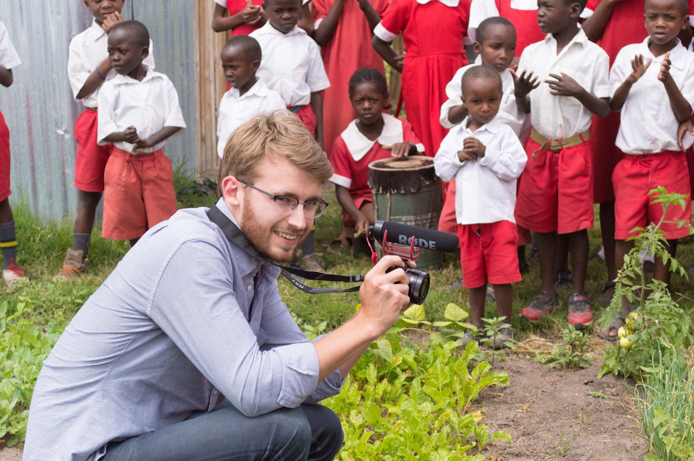
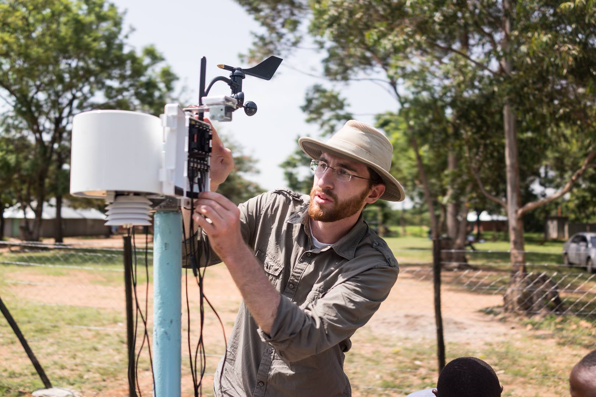
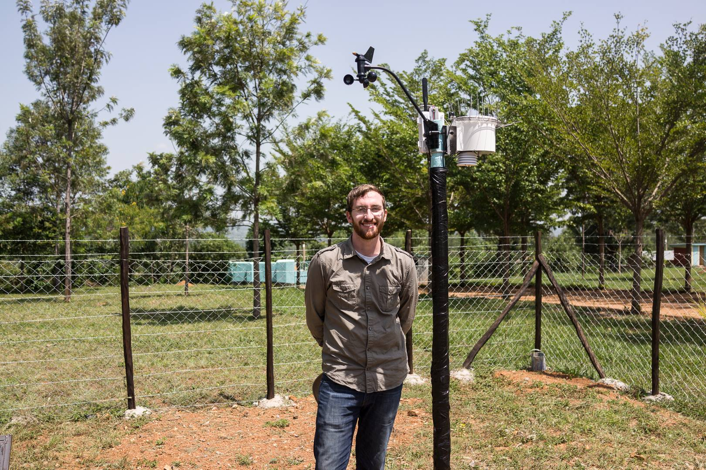
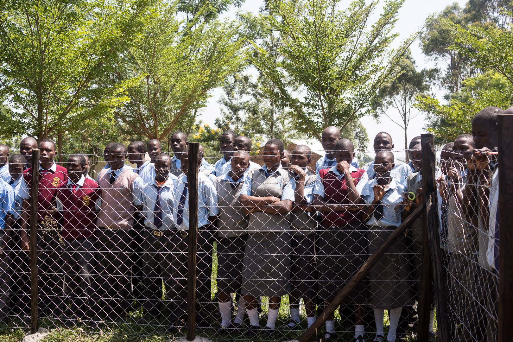
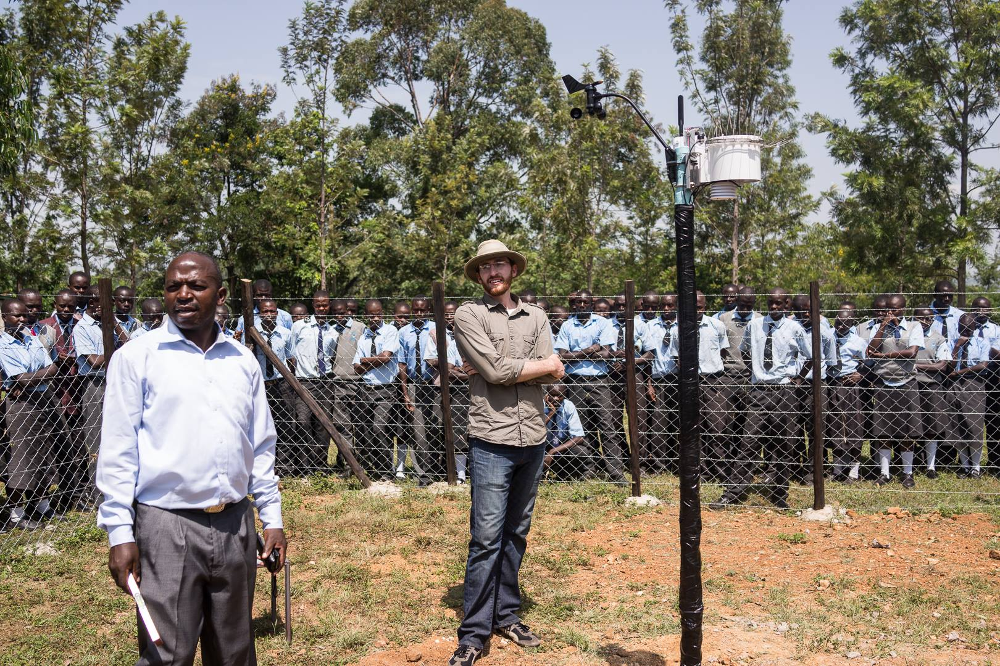

One down, 19,999 to go
POSTED 4 JULY 2014
Back in Oregon! My Boren Fellowship is officially over and I'm now stateside for the first time since my Christmas vacation six months ago. It was such a privilege for me to spend nine months in Kenya as a Boren Fellow. From an academic perspective it provided me the opportunity to carry out research to use as the basis of my thesis. Professionally, I had the opportunity to continue laying the foundation for TAHMO's success in Kenya, which may result in my return to Kenya next year. Lastly, Boren provided a way for me to reconnect with many folks in Kenya that I met during my time with Engineers Without Borders, especially those from Lela.
On that note, some very sad news to report is that Rachael Olang'o, a wife, mother, aunt, sister, grandmother, and dear friend passed away on June 28, 2014 following a battle with malaria. Rachael was well known by the travel teams from OSU's Engineers Without Borders chapter as she was the one who often prepared meals for us and in general made sure we were comfortable in Lela. I visited Rachael in the hospital shortly before leaving Kenya. Even as she lay in her hospital bed struggling with a terrible disease, she wanted to make sure my brother and I were comfortable during our visit to Lela. That was the kind of person Rachael was. She will be missed.

Rachael (left) with her friend Rose in July 2012
My thoughts are with the Olang'o family during this time. I can't imagine how difficult it is to lose a loved one so suddenly and unexpectedly.
Colin's visit
Before I left Kenya I had the pleasure of hosting my twin brother Colin for two weeks. I tried to give him a sampling of the many facets of Kenyan life, from the hustle of Nairobi to the calm of village life to the sights of Maasai Mara.

I had a great time leading Colin around Kenya and showing him what my life for the past nine months has been like. Thanks for making the trip bro!
One final task
I also planned the installation of a TAHMO weather station in Kenya to coincide with Colin's visit — partly due to the convenience of already being in the same region of the country but also to give Colin the opportunity to see firsthand the kind of work I've been doing in Kenya. In my previous post I wrote about the technology that TAHMO is relying on to develop a weather station network in sub-Saharan Africa. On June 18th I put that technology to use, installing a weather station at Koyoo Secondary School in western Kenya. With that, I had crossed off all the items on my to-do list for Kenya.
 After the weather station was installed, the students of Koyoo gathered around the weather station's protective fence to hear an explanation of how the sensors worked and to ask questions. Koyoo was selected for its suitability of installation, but it is also a core part of TAHMO's vision that our weather data will be used to enhance the curriculum of local schools. What this means is that each school hosting a TAHMO weather station will have access to that station's data. Teachers will then have the opportunity to use weather data from their own region to augment lessons on weather, climate, geography, and computer science.
 The weather station at Koyoo is TAHMO's first official installation in Kenya. We are now one step closer to our ambitious goal of installing 20,000 stations across sub-Saharan Africa. We were also recently announced as finalists in USAID's Securing Water for Food challenge. Depending on the results of our grant proposal, I may be heading back to Kenya in January to act as TAHMO's East Africa Field Director. Essentially, I would be tasked with leading the ground operation necessary to scale up our efforts across East Africa.
For the next six months I will be catching up on family time, finishing up my remaining classes, completing/defending my thesis, and drinking plenty of Oregon microbrews. I hope you've enjoyed reading my blog – hopefully I will be able to continue writing about my adventures in Kenya come next year.